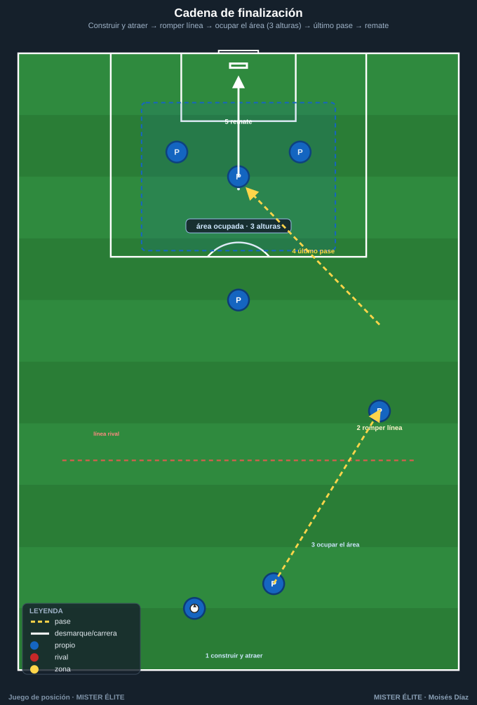
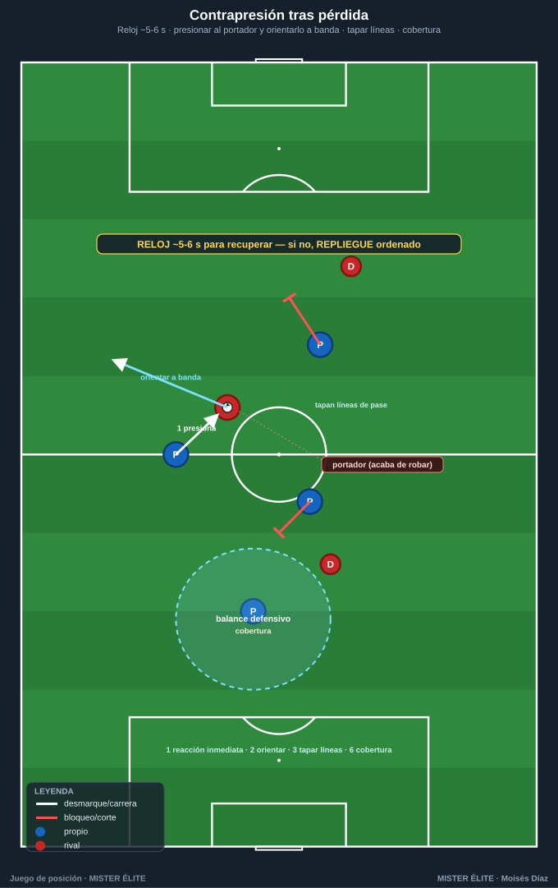

Módulo 04 · Posesión con finalidad
La posesión no es un fin (tener el balón), es un medio: progresar, finalizar y, al perderlo, recuperar — sostenido por proteger el balón.
0. La premisa: posesión ≠ fin, posesión = medio
Tener el balón solo sirve si conduce a algo. Una posesión es buena cuando progresa, rompe líneas y termina en ocasión, no cuando acumula pases. Toda la finalidad se resume en tres verbos encadenados —progresar → finalizar → (al perder) recuperar— más un cuarto que los sostiene: proteger.
1. Posesión para progresar y para finalizar
1.1 Progresar: romper líneas y encontrar al hombre libre entre líneas
Progresar es avanzar el balón superando líneas defensivas en condiciones de seguir jugando (no es "tirar el balón hacia delante"). El objetivo concreto es encontrar al hombre libre entre líneas (el que recibe entre la defensa y la medular rival, de cara y con tiempo).
Mecanismos de progresión (cómo se rompe una línea):
- Pase entre líneas a jugador de cara — el más valioso: rompe línea y orienta el ataque de una sola acción.
- Atraer para liberar (fijar y cambiar) — la superioridad se crea moviendo al rival, no solo el balón.
- Tercer hombre — cuando el receptor que rompe está marcado, se juega a un apoyo que filtra al tercero.
- Conducir para fijar, fijar para pasar — conducir hacia un rival lo obliga a salir y libera al que dejó.
- Superioridad posicional > numérica — no basta ser más: hay que estar mejor situados para que siempre exista una línea que rompa.
Condición de calidad: la progresión vale cuando el balón llega controlable y orientado (de cara), no cuando cruza una línea en el aire y se pierde. Por eso las tareas premian recibir de cara entre líneas, no solo "llegar arriba".
1.2 Finalizar: cómo la posesión termina en ocasión

La posesión que progresa pero no remata es trabajo a medias. Finalizar es convertir la superioridad en un remate en buena posición. Dos componentes:
- Posición (la ocasión se construye antes del remate). Empieza con la ocupación del área: alguien al primer palo, al segundo, al punto de penalti, alguien en la frontal para el rechace, y amplitud que estire a la defensa. La posesión debe llegar a la última línea con esa estructura ya formada.
- Remate (la decisión final). El último pase deja al rematador de cara y con espacio/tiempo: pase atrás desde fondo, centro raso/medido a la zona ocupada, o filtrado para el mano a mano.
construir y atraer → romper línea (hombre libre entre líneas / banda)
→ llegar a fondo o frontal con el área OCUPADA → último pase a jugador de cara → REMATE
Implicación para el diseño (familia 5): las tareas de finalización exigen posición + remate — punto solo si el gol llega tras romper una línea u ocupar bien el área. Posesión y finalización quedan unidas, no separadas.
2. Proteger el balón y contrapresión tras pérdida
2.1 Proteger el balón
Proteger no es jugar lento, es asegurar el balón cuando no hay progresión limpia disponible: cuerpo entre balón y rival (perfil de protección); apoyo de seguridad siempre disponible por detrás; no forzar el pase imposible (asegurar antes que regalar en zona de riesgo); cuerpo orientado para volver a jugar hacia delante en cuanto baje la presión.
2.2 Contrapresión tras pérdida — las reglas

La contrapresión es presionar inmediatamente tras perder, para recuperar donde se perdió, aprovechando que el rival está mal orientado. El momento más vulnerable de un equipo es justo después de recuperar.
- Reacción inmediata (1-2 s). El que pierde y los más cercanos pasan de atacar a presionar al instante, sin medio segundo de lamento.
- Presionar al portador y orientarlo: el más cercano impide el pase fácil hacia delante y conduce al rival hacia la banda/atrás.
- Los de alrededor tapan líneas de pase, no van todos al balón: recuperar es colectivo (uno presiona, el resto roba el espacio de pase).
- Recuperar en pocos segundos (~5-6 s) o replegar: si no se recupera en el plazo o el rival saca con control, se repliega ordenado. Contrapresión fallida sin repliegue = contraataque encajado.
- Compactar y achicar al perder: subir y juntar líneas para dejar al rival sin opciones cómodas.
- Gatillo + cobertura: definir cuándo se contrapresiona y que siempre quede cobertura detrás.
2.3 Por qué el juego de posición facilita la contrapresión
No es casualidad que los mejores en juego de posición sean los mejores en contrapresión: la misma estructura que ordena el ataque ordena el robo inmediato. La ocupación racional mantiene a los jugadores cerca y escalonados → al perder, ya hay varios cuerpos alrededor; las distancias cortas hacen la reacción inmediata y coordinada; si la pérdida ocurre tras atraer al rival, este está juntado y mal posicionado para defender la contra; y el balance defensivo ya está hecho (regla 6).
Idea-fuerza: atacar bien (con estructura) es la mejor manera de defender rápido. Orden con balón = orden inmediato sin balón.
3. Indicadores de una buena posesión
El error de medición más extendido es valorar la posesión por el nº de pases o el % de posesión: pueden subir mientras el equipo no hace nada útil. Los indicadores que importan miden finalidad:
Sí miden una buena posesión: progresión (metros ganados, pases que progresan vs laterales); ruptura de líneas (líneas superadas con control, pases entre líneas de cara — el indicador estrella); encontrar al hombre libre; ocasiones generadas y calidad de la finalización; recuperación tras pérdida (% recuperado en X s); conservación con sentido (pocas pérdidas en zona de riesgo).
No sirven por sí solos: nº de pases / % de posesión; pases completados en zona segura.
Regla de evaluación y diseño: una posesión es buena si progresa, rompe líneas y termina en ocasión —y si, al perderse, el equipo está estructurado para recuperar—. Las tareas puntúan por ruptura de línea, hombre libre y remate, no por tocar.
Ideas clave
- La posesión es medio, no fin: vale si progresa, rompe líneas y termina en ocasión.
- Progresar = romper líneas encontrando al hombre libre de cara; la calidad es recibir controlable y orientado.
- Finalizar = posición (área ocupada en 3 alturas) + remate (último pase que deja de cara).
- Proteger asegura cuando no hay progresión limpia; nunca forzar el pase imposible en zona de riesgo.
- La contrapresión se rige por 6 reglas (reacción, orientar, tapar líneas, X s o replegar, compactar, gatillo+cobertura) y se apoya en la misma estructura del ataque.
- Se mide por ruptura de línea, hombre libre y remate, no por % de posesión.
Errores comunes
- Medir la posesión por el % o el nº de pases: se puede tener el 70% y no rematar.
- Progresar "en el aire": mandar el balón arriba sin que llegue controlable y de cara.
- Finalizar sin haber ocupado el área: llegar a fondo sin estructura → no hay rematadores.
- No reaccionar tras la pérdida: el medio segundo de lamento regala la transición.
- Contrapresionar sin gatillo ni cobertura: quedar abiertos a la contra si el rival supera la primera presión.
MISTER ÉLITE — Moisés Díaz